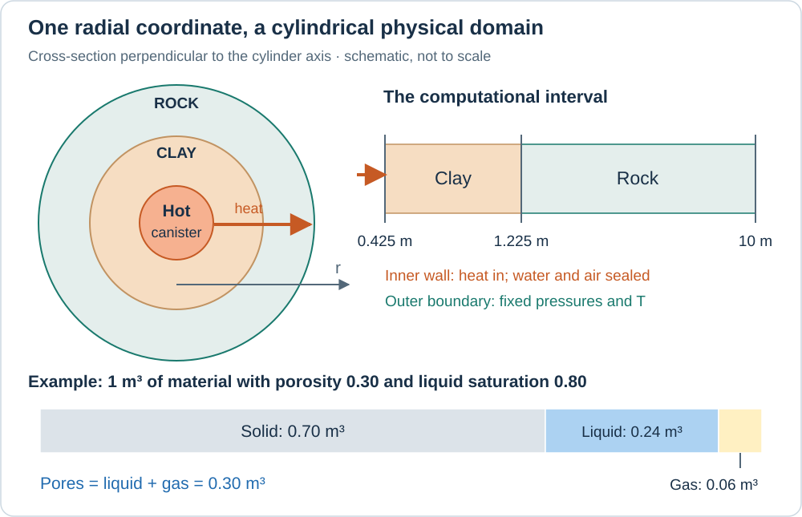
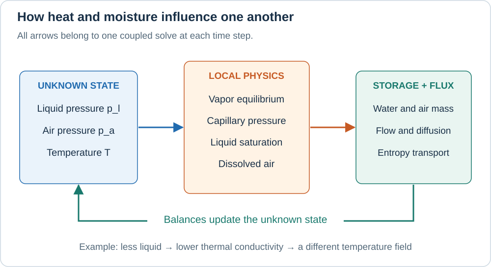
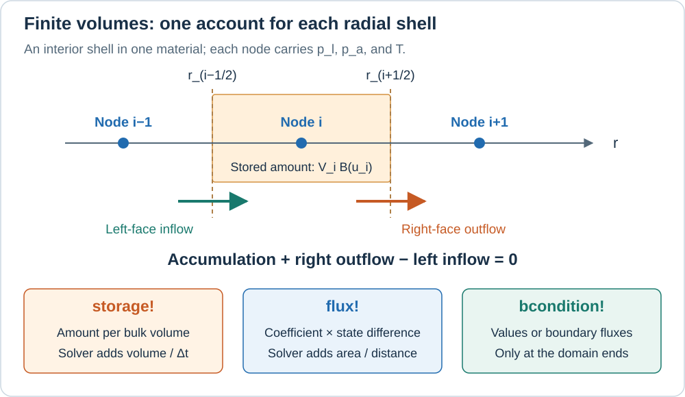
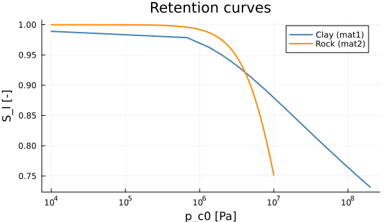
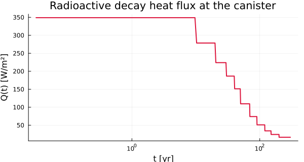
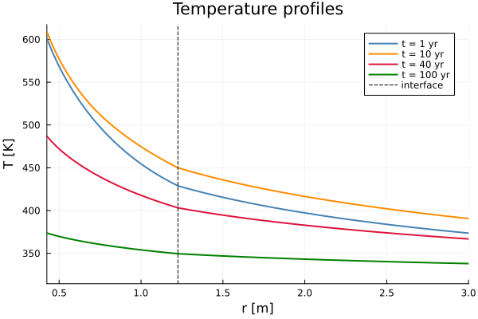
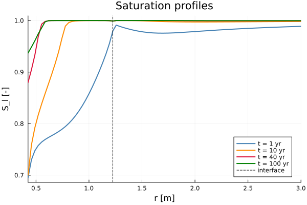

Non-isothermal Drying: From Pores to a Coupled Simulation
A hot container is surrounded by moist clay and rock. Heat moves outward; liquid water, water vapor, and air redistribute through the pores. Can the clay dry near the heater while becoming wetter farther away? How do we turn that question into equations and then into a PoroMechanics simulation?
This worked example assumes introductory calculus, basic heat transfer, and a little Julia. Non-isothermal means that temperature varies in space and time. Coupled means that changing temperature changes water transport, and changing water content changes heat transport. We must solve these processes together.
First learn what occupies the pores and what the three unknowns mean. Then read each equation as accumulation + net outflow = 0. Finally, follow the same terms into storage!, flux!, and bcondition!. The Getting Started tutorial develops this approach for one diffusion equation; here we extend it to three interacting equations.
1. The physical experiment

Imagine a long cylindrical canister. We neglect variations along its axis and around its circumference: every point at the same radius behaves alike. This is axisymmetry. We only need the radial coordinate $r$, although the material still occupies a three-dimensional cylindrical shell.
The canister interior is outside the computational domain. Its surface supplies heat to a clay buffer, which is surrounded by host rock. The outer boundary represents a reservoir maintained at fixed pressures and temperature.
| Part | Radial extent | Porosity $\phi$ | Permeability $k_{\rm int}$ |
|---|---|---|---|
| Clay, material region 1 | 0.425–1.225 m | 0.30 | $10^{-20}$ m² |
| Rock, material region 2 | 1.225–10 m | 0.05 | $10^{-19}$ m² |
Porosity is the fraction of total volume occupied by pores. Intrinsic permeability measures how readily a connected pore network lets fluid pass. These are different properties: in this parameter set the rock has fewer pores, yet a larger permeability. The clay is 0.8 m thick; 1.225 m is the interface radius, not its thickness.
What is inside one small piece of clay?
The pores contain a liquid phase and a gas phase. The gas is a mixture of water vapor and dry air. A small amount of air also dissolves in the liquid. A phase describes an aggregate state; a component identifies material that we track. Water therefore belongs to two phases, but it is one conserved component.
The liquid saturation $S_l$ is the fraction of pore volume occupied by liquid. Thus $S_g = 1-S_l$ is the gas saturation. In a 1 m³ sample with $\phi=0.30$ and $S_l=0.80$, there are 0.24 m³ of liquid, 0.06 m³ of gas, and 0.70 m³ of solid. Saturation 0.80 does not mean that 80% of the whole sample is water.
We idealize the solid as rigid: porosity and geometry stay fixed. Liquid density and viscosities are constant, the gas constituents obey ideal-gas laws, and all phases share one local temperature. Liquid–vapor equilibrium is imposed locally. The example has no deformation equation, chemical reactions, or gravity term. PoroMechanics can support other models, but those effects are not present in this one.
Initial and boundary conditions
An initial condition sets the state everywhere at time zero. A boundary condition describes exchanges with the surroundings throughout the calculation.
| Initial material | Liquid pressure $p_l$ | Air partial pressure $p_a$ | Temperature $T$ |
|---|---|---|---|
| Clay | −76.11655 MPa | 0.09225595 MPa | 323 K |
| Rock | 4.905 MPa | 4.891671 MPa | 323 K |
Here 1 MPa = $10^6$ Pa and 323 K is about 50 °C. The negative liquid pressure is the model's representation of water under capillary tension; it is not a negative gas pressure. Whether such large tensions are physically sustainable depends on the material and on effects such as cavitation that this model does not include.
| Boundary | Prescribed condition | Physical interpretation |
|---|---|---|
| Canister, $r=0.425$ m | Incoming heat flux $Q_{\rm in}(t)$; zero water and air fluxes | Heat crosses the wall; matter does not |
| Outer rock, $r=10$ m | $p_l=4.905$ MPa, $p_a=4.891671$ MPa, $T=323$ K | A reservoir can supply or remove water, air, and heat |
Prescribing a value is a Dirichlet condition; prescribing a flux is a Neumann condition. A heat flux in W/m² is power per area, not a temperature. The canister wall will find its own temperature as the coupled equations evolve.
The supplied table contains cumulative heat $F(t)$ in J/m². Its slope gives $Q_{\rm in}=dF/dt$: approximately 349 W/m² during the first ten years, decreasing in steps afterward. Only the boundary injects this heat; there is no radioactive heat source inside the clay or rock.
2. Three unknowns, many derived quantities
At each radius and time the solver seeks
\[\mathbf{u}(r,t)=\begin{pmatrix}p_l\\p_a\\T\end{pmatrix}.\]
The vapor pressure $p_v$, gas pressure $p_g$, and saturation are derived quantities: constitutive laws calculate them from these three unknowns. A constitutive law describes a material's response and supplies the information that conservation alone cannot provide.
| Symbol | Meaning | Unit |
|---|---|---|
| $p_a$, $p_v$ | Partial pressures of air and vapor in the same gas mixture | Pa |
| $p_g=p_a+p_v$ | Total gas pressure | Pa |
| $p_c=p_g-p_l$ | Capillary pressure, the gas–liquid pressure difference | Pa |
| $\rho_l,\rho_v,\rho_a$ | Liquid density and gas-component densities | kg/m³ of the corresponding phase |
| $M_l,M_v,M_a,M_{ad}$ | Liquid water, vapor, gaseous air, and dissolved air inventories | kg/m³ of porous medium |
| $W_l,W_v,W_a,W_{ad}$ | Radial mass fluxes, positive outward | kg/(m²·s) |
| $s_l,s_v,s_a$ | Specific entropies | J/(kg·K) |
| $S_{\rm sys}$, $J_s$ | Entropy per bulk volume and its radial flux | J/(m³·K), W/(m²·K) |
Capillary retention: how much water stays in the pores?
Capillary forces allow small pores to hold water while gas occupies other pores. The retention curve gives $S_l$ as a function of capillary pressure. In this example, a larger positive $p_c$ generally means less liquid water. Each material has its own curve, so equal pressures on the two sides of the interface need not mean equal saturations.
For sufficiently large reduced capillary pressure, the chosen curve is
\[S_l^{\rm raw}(p_{c0})=\left[1+(p_{c0}/a)^n\right]^{-m}, \qquad p_{c0}=\frac{p_c}{1-\alpha_T(T-T_0)}.\]
The pressure scale $a$ and dimensionless exponents $n,m$ set the curve's shape. The denominator introduces the model's empirical thermal shift. For positive $p_c$, raising $T$ increases $p_{c0}$ and lowers $S_l$ if the pressures are held fixed. In the full problem, the pressures also change, so this observation alone cannot predict whether a particular point dries.
Near saturation the code uses ExponentialCutoff: an exponential continuation below $p_{c3}$, including negative pressures,
\[S_l(p_{c0})=1-[1-S_l^{\rm raw}(p_{c3})] \exp\!\left(\frac{p_{c0}-p_{c3}}{p_{c3}}\right).\]
It approaches 1 continuously as pressure decreases. Setting it abruptly to 1 at zero would create a jump in stored water and remove its pressure sensitivity on the negative side. That distinction matters because the initial rock has $p_c\approx-50$ Pa. The continuation matches the value, but not generally the slope, at $p_{c3}$.
Evaporation and vapor pressure
Heating favors evaporation, while capillary tension lowers the equilibrium vapor pressure. The implemented Kelvin relation combines these effects:
\[p_v=p_{v0}\exp\!\left\{\frac{M_v^{\rm mol}/R}{T} \left[\frac{p_l-p_{l0}}{\rho_l}+\frac{L_0(T-T_0)}{T_0} +(C_{pl}-C_{pv})\left(T-T_0-T\ln\frac{T}{T_0}\right)\right]\right\}.\]
Here $R$ is the gas constant, $M_v^{\rm mol}$ the molar mass of water, $L_0$ a reference latent heat, and $C_{pl},C_{pv}$ specific heat capacities. The subscript 0 marks a reference state used in the formula, not the initial state: $T_0=293$ K whereas $T_{\rm ini}=323$ K. At $p_l=p_{l0}$ and $T=T_0$, the exponent vanishes and the function must return $p_{v0}$.
The ideal-gas relations then give $\rho_v=p_v(M_v^{\rm mol}/R)/T$ and $\rho_a=p_a(M_a^{\rm mol}/R)/T$. In the code the two molar-mass-to-gas-constant ratios are M_vsR and M_asR; their units are kg·K/J.

3. Build the equations by keeping accounts
Take a small fixed volume. The amount of water inside can change only through its boundary: evaporation moves water between phases but does not create or destroy it. If we wrote separate liquid and vapor balances, evaporation would enter with opposite signs and cancel when we added them.
The water inventory per bulk volume is therefore
\[w=\underbrace{\rho_l\phi S_l}_{M_l} +\underbrace{\rho_v\phi(1-S_l)}_{M_v}, \qquad W_w=W_l+W_v.\]
For the dry-air component we also account for dissolution:
\[X_{ad}=\frac{p_a}{H_a}\frac{M_a^{\rm mol}}{M_v^{\rm mol}},\qquad M_{ad}=M_lX_{ad},\qquad b=\underbrace{\rho_a\phi(1-S_l)}_{M_a}+M_{ad},\qquad W_b=W_a+W_{ad}.\]
$X_{ad}$ is the dilute dissolved-air mass fraction used here; Henry's constant $H_a$ sets its scale. The approximation keeps liquid-water density fixed and transports dissolved air with the liquid, $W_{ad}=X_{ad}W_l$. It neglects a separate dissolved-air diffusion term and the heat of dissolution.
Why a radial balance contains a factor of $r$
A cylindrical surface at radius $r$ has area $2\pi r\ell$ for axial length $\ell$. A shell of thickness $dr$ has volume approximately $2\pi r\ell\,dr$. Its balance is
\[\frac{\partial}{\partial t}\left(w\,2\pi r\ell\,dr\right) +\left[2\pi(r+dr)\ell W_w(r+dr)-2\pi r\ell W_w(r)\right]=0.\]
Divide by the shell volume and let $dr$ tend to zero. The component balances become
\[\underbrace{\frac{\partial w}{\partial t}}_{\text{accumulation}} +\underbrace{\frac1r\frac{\partial(rW_w)}{\partial r}}_{\text{net outflow per volume}}=0, \qquad \frac{\partial b}{\partial t}+\frac1r\frac{\partial(rW_b)}{\partial r}=0.\]
If more water leaves than enters, the first term must be negative. In steady radial flow, $rW_w$ is constant, so the flux per area decreases with radius as the same flow spreads over a larger cylindrical surface. This is why a radial calculation is not the same as a planar calculation with a renamed coordinate.
4. What makes water, air, and heat move?
A gradient is a change per distance. Transport laws relate these gradients to fluxes. For liquid water, Darcy's law in this example is
\[W_l=-\underbrace{\frac{\rho_l k_{\rm int}k_{rl}}{\mu_l}}_{K_l} \frac{\partial p_l}{\partial r}.\]
The minus sign sends liquid toward lower liquid pressure. The dimensionless relative permeability $k_{rl}$ reduces flow when liquid occupies only part of the pore network. PowerLawKrl calculates it; the gas has its own factor $k_{rg}$. These are the usual storage and Darcy ingredients of a two-phase model; see the DuMux course's balance equations.
Vapor and air move both with the pressure-driven gas mixture and by diffusion within that mixture. Defining mass fractions $c_v=\rho_v/(\rho_v+\rho_a)$ and $c_a=1-c_v$, the implemented flux structure is
\[W_v=-K_{D,v}\frac{\partial p_g}{\partial r} -K_F\frac{\partial c_v}{\partial r},\qquad W_a=-K_{D,a}\frac{\partial p_g}{\partial r} -K_F\frac{\partial c_a}{\partial r}.\]
The diffusion terms are opposite because $c_a=1-c_v$. The coefficients also include the pressure-diffusion correction visible in bar in the code. Gas diffusion is reduced when its pathways become scarce or indirect:
\[D_{\rm eff}=\phi S_g\tau D_{av},\quad \tau=\phi^{1/3}S_g^{7/3},\quad D_{av}=D_{av0}\frac{p_{v0}+p_{a0}}{p_g}\left(\frac{T}{T_0}\right)^{1.88},\quad K_F=(\rho_v+\rho_a)D_{\rm eff}.\]
Here $\tau$ is the dimensionless path-reduction factor of the chosen tortuosity law. Its strong dependence on gas saturation suppresses diffusion as pores fill with liquid. These coefficients are model inputs and empirical closures, not universal constants for every clay or rock.
Heat conduction follows Fourier's law:
\[q_r=-\lambda_{\rm eff}\frac{\partial T}{\partial r},\qquad \lambda_{\rm eff}=\lambda_s^{1-\phi}\lambda_l^{\phi S_l} \lambda_g^{\phi S_g}.\]
$q_r$ is heat flux in W/m² and $\lambda_{\rm eff}$ is conductivity in W/(m·K). The weighted geometric mean gives each constituent a contribution according to its volume fraction. Since the liquid conductivity exceeds the gas conductivity in this model, losing liquid reduces conduction. Matter also transports thermal energy; vapor is especially important because evaporation and condensation involve latent heat.
The thermal equation actually solved here
This example uses entropy as its third stored quantity, while temperature remains the third unknown. Specific entropy $s$ is measured per unit mass; $S_{\rm sys}$ is measured per bulk volume. Neither is the saturation $S_l$.
For reference, the general local entropy balance has a production term:
\[\frac{\partial S_{\rm sys}}{\partial t} +\frac1r\frac{\partial(rJ_s)}{\partial r}=\sigma_s.\]
Irreversible processes produce entropy: for conduction alone the contribution is $\lambda_{\rm eff}(\partial_rT)^2/T^2\geq0$. Heat also transports entropy at the rate $q_r/T$. These are distinct effects; the MIT thermodynamics notes explain transfer versus generation.
The implemented equation sets the explicit production term $\sigma_s$ to zero. It retains entropy carried by heat and matter. This is an approximation of the thermal balance, not an exact energy-conservation statement for general irreversible transport. Numerical convergence does not establish the accuracy of this approximation.
The storage and flux supplied to the solver are
\[S_{\rm sys}=C_s\ln\frac{T}{T_0} -\phi\int_0^{p_c}\left.\frac{\partial S_l}{\partial T}\right|_{p_c'}dp_c' +M_ls_l+M_vs_v+(M_a+M_{ad})s_a, \qquad J_s=\frac{q_r}{T}+s_lW_l+s_vW_v+s_a(W_a+W_{ad}).\]
Read the storage as solid contribution + capillary contribution + fluid contributions. $C_s$ is the bulk-volume solid heat-capacity coefficient used by the code. The capillary integral accounts for the temperature-dependent retention law. Pressure has units J/m³, so integrating a saturation derivative in K⁻¹ over pressure gives exactly J/(m³·K), the required unit of entropy density.
The fluid entropies are
\[s_l=C_{pl}\ln(T/T_0),\quad s_v=C_{pv}\ln(T/T_0)-\frac{\ln(p_v/p_{v0})}{M_v^{\rm mol}/R}+\frac{L_0}{T_0},\quad s_a=C_{pa}\ln(T/T_0)-\frac{\ln(p_a/p_{a0})}{M_a^{\rm mol}/R}.\]
The large $L_0/T_0$ contribution shows where latent heat enters this formulation. Dissolved air is assigned the same specific entropy as gaseous air, another explicit simplification. Boundary heating must enter the entropy equation as $Q_{\rm in}/T$, not directly as $Q_{\rm in}$.
5. From continuous balances to finite volumes

The grid places nodes at radii $r_i$. An interior node owns a shell bounded by the midpoints $r_{i-1/2}$ and $r_{i+1/2}$. Its volume is $V_i=\pi\ell(r_{i+1/2}^2-r_{i-1/2}^2)$ and its face areas are $A_{i\pm1/2}=2\pi\ell r_{i\pm1/2}$. A common factor such as $\ell$ cancels from the equations. For any of the three balances, implicit Euler gives
\[V_i\frac{B(\mathbf u_i^{n+1})-B(\mathbf u_i^n)}{\Delta t} +A_{i+1/2}J_{i+1/2}^{n+1}-A_{i-1/2}J_{i-1/2}^{n+1}=0.\]
Here $B$ is $w$, $b$, or $S_{\rm sys}$, and $J$ is its associated flux. Superscripts label time steps. Implicit means that the new, unknown state is used in both storage and flux. The equations for all nodes are solved together. Each shared face contributes with opposite signs to its two neighboring balances, which is the basic conservation mechanism of finite volumes.
For a liquid flux on an edge joining nodes 1 and 2, the code supplies $K_l(p_{l,1}-p_{l,2})$. VoronoiFVM supplies the distance and area factors. Do not divide by the mesh spacing or multiply by $2\pi r$ again inside flux!. The circular_symmetric! grid setting provides the cylindrical geometry.
At the material interface, the control volume contains parts of both materials. The storage contribution is accumulated separately for each region. Pressures and temperature use a shared node; saturation is evaluated separately on each side.
6. Express the model in PoroMechanics
PoroMechanics provides the model interface and reusable constitutive laws. VoronoiFVM assembles and solves the finite volume equations. ExtendableGrids builds the mesh. The material constants, constitutive choices, and boundary data belong to our DryingModel.
| Mathematical role | Method implemented below | What the method writes into f |
|---|---|---|
| Stored quantities $B(\mathbf u)$ | PoroMechanics.storage! | Water mass, air mass, entropy per bulk volume |
| Edge transport | PoroMechanics.flux! | Flux expressions before geometric factors |
| Exchanges with surroundings | PoroMechanics.bcondition! | Dirichlet values and incoming entropy flux |
fvm_system(model, grid) connects these methods to VoronoiFVM. We do not construct a Jacobian matrix by hand. The backend differentiates the local expressions and assembles the coupled system. Here a species index labels an equation/unknown slot: it can represent temperature, so it need not denote a chemical species.
using PoroMechanics
using VoronoiFVM
using ExtendableGrids
using Printf6.1 Store material data, then declare the unknowns
A Julia struct groups named fields. DryingMaterial groups the properties of one material; DryingModel contains the two materials and the problem data. The notation DryingModel <: AbstractPoroModel declares that our type participates in the PoroMechanics model interface. Base.@kwdef lets us construct it using named arguments with defaults, for example DryingModel(; T_ini = 323.0).
The type parameters {T, R, K} allow ordinary floating-point numbers or numbers that carry derivatives. promote brings numerical inputs to a compatible type. ForwardDiff uses derivative-carrying numbers to obtain the local Jacobian needed by Newton's method. Do not force such intermediate quantities back to Float64 inside a constitutive law.
"""
Parameters of one material for model M6 (non-isothermal drying).
Two instances are embedded in `DryingModel`: clay (mat1) and rock (mat2).
"""
struct DryingMaterial{T, R, K}
phi::T # porosity [-]
k_int::T # intrinsic permeability [m²]
lam_s::T # solid thermal conductivity [W/(m·K)]
C_s::T # volumetric heat capacity [J/(m³·K)]
retention::R # S_l(p_c), regularized near saturation
rel_perm::K # k_rl(p_c)
end
# Promote rather than require a single type: differentiating with respect to one
# coefficient makes that field a `Dual` while the others stay `Float64`.
function DryingMaterial(phi, k_int, lam_s, C_s, retention, rel_perm)
return DryingMaterial(promote(phi, k_int, lam_s, C_s)..., retention, rel_perm)
end
"""
DryingModel
Model M6 — thermo-hydric drying of an unsaturated porous medium, 2 materials.
**Primary unknowns:** liquid pressure `p_l` [Pa], dry air pressure `p_a` [Pa],
temperature `T` [K].
**Geometry:** axisymmetric, radius `r_in ≤ r ≤ r_out`, with the clay buffer between `r_in`
and `r_int` and the host rock beyond.
**Boundary conditions:**
- `r = r_in` : Neumann heat flux `Q(t)` [W/m²] (radioactive canister), no water or air flux
- `r = r_out` : Dirichlet `p_l`, `p_a`, `T` (initial values of the rock)
"""
Base.@kwdef struct DryingModel{T, M1, M2} <: AbstractPoroModel
# ── Parameters common to both materials ───────────────────────────────────
rho_l::T = 1000.0 # liquid density [kg/m³]
mu_l::T = 1.0e-3 # liquid viscosity [Pa·s]
mu_g::T = 1.8e-5 # gas viscosity [Pa·s]
M_vsR::T = 0.00216 # water molar mass / R [kg·K/J]
M_asR::T = 0.00346 # air molar mass / R [kg·K/J]
p_l0::T = 1.0e5 # reference liquid pressure [Pa]
p_v0::T = 2460.0 # saturated vapor pressure at T₀ [Pa]
p_a0::T = 97540.0 # reference air pressure [Pa]
T_0::T = 293.0 # reference temperature [K]
D_av0::T = 0.00248 # air-vapor diffusion at T₀ [m²/s]
lam_l::T = 0.6 # liquid thermal conductivity [W/(m·K)]
lam_g::T = 0.026 # gas thermal conductivity [W/(m·K)]
C_pl::T = 4180.0 # liquid specific heat [J/(kg·K)]
C_pv::T = 1800.0 # vapor specific heat [J/(kg·K)]
C_pa::T = 1000.0 # dry air specific heat [J/(kg·K)]
L_0::T = 2.45e6 # latent heat of vaporization [J/kg]
alpha_T::T = 0.003 # thermal variation coeff. of S_l [1/K]
H_a::T = 1.0e10 # Henry constant of air in water [Pa] (Olivella et al., 1994)
# ── Geometry (axisymmetric) ────────────────────────────────────────────────
r_in::T = 0.425 # canister radius [m]
r_int::T = 1.225 # clay / rock interface [m]
r_out::T = 10.0 # outer radius, where the rock is held at its initial state [m]
# ── Materials ──────────────────────────────────────────────────────────────
# The exponents are the published values, not recomputed from m: the fitted n of
# 1.06383 differs from 1/(1-0.06) = 1.0638297… in the last digits, and the
# three-argument `VanGenuchten` keeps them as given.
mat1::M1 = DryingMaterial( # compacted clay
0.30, 1.0e-20, 1.12, 2.3e6,
ExponentialCutoff(VanGenuchten(1.5e6, 1.06383, 0.06), 1.0e6),
PowerLawKrl(3.0e6, 2.0, 0.5),
)
mat2::M2 = DryingMaterial( # host rock
0.05, 1.0e-19, 1.62, 2.0e6,
ExponentialCutoff(VanGenuchten(10.0e6, 1.7, 0.4117), 2.0e5),
PowerLawKrl(10.0e6, 2.0, 1.0),
)
# ── Initial conditions (reference case, fields 1-5) ───────────────────────
p_l_ini1::T = -7.611655e7 # p_l in the clay zone [Pa]
p_a_ini1::T = 9.225595e4 # p_a in the clay zone [Pa]
p_l_ini2::T = 4.905e6 # p_l in the rock zone [Pa]
p_a_ini2::T = 4.891671e6 # p_a in the rock zone [Pa]
T_ini::T = 323.0 # initial temperature (zones 1 and 2) [K]
end
PoroMechanics.nspecies(::DryingModel) = 3
# Promote rather than require a single type: differentiating with respect to one parameter
# makes that field a `Dual` while the rest stay `Float64`, which is what `@kwdef` alone
# cannot express.
function DryingModel(rho_l, mu_l, mu_g, M_vsR, M_asR, p_l0, p_v0, p_a0, T_0, D_av0, lam_l, lam_g, C_pl, C_pv, C_pa, L_0, alpha_T, H_a, r_in, r_int, r_out, mat1, mat2, p_l_ini1, p_a_ini1, p_l_ini2, p_a_ini2, T_ini)
scalars = promote(rho_l, mu_l, mu_g, M_vsR, M_asR, p_l0, p_v0, p_a0, T_0, D_av0, lam_l, lam_g, C_pl, C_pv, C_pa, L_0, alpha_T, H_a, r_in, r_int, r_out, p_l_ini1, p_a_ini1, p_l_ini2, p_a_ini2, T_ini)
return DryingModel(scalars[1:21]..., mat1, mat2, scalars[22:end]...)
end
PoroMechanics.species_names(::DryingModel) = [:p_l, :p_a, :T]
# Indices of the unknowns (VoronoiFVM species)
const U_PL = 1
const U_PA = 2
const U_TEM = 336.2 Reuse constitutive laws
nspecies tells the adapter that there are three slots, and species_names labels them. U_PL, U_PA, and U_TEM are integer row indices; Julia arrays start at 1.
VanGenuchten, ExponentialCutoff, and PowerLawKrl already live in PoroMechanics. The short helpers below select the law stored in each material and evaluate it. A new reusable law belongs in src/Constitutive/; an example only chooses its parameters.
node.region and edge.region identify a material region. At the shared interface, the backend calls storage once for each adjoining material contribution. Choosing a material solely by the coordinate of that shared node would assign the same law to both sides and give the wrong stored mass.
_Sl(mat::DryingMaterial, pc) = saturation(mat.retention, pc)
_dSl(mat::DryingMaterial, pc) = dsaturation_dpc(mat.retention, pc)
_krl(mat::DryingMaterial, pc) = relative_permeability(mat.rel_perm, pc)
_krg(sl) = gas_relative_permeability(sl)
# Material of a cell region: 1 is the clay, 2 the rock. A node on the interface belongs to
# both, and VoronoiFVM calls `storage!` once for each side, with that side's region.
_mat(m::DryingModel, region) = region == 1 ? m.mat1 : m.mat2
# Mass fraction of air dissolved in the liquid, from Henry's law. M_a/M_w is read off the
# two M/R coefficients, since R cancels.
_dissolved_air(m::DryingModel, pa) = pa / m.H_a * m.M_asR / m.M_vsR_dissolved_air (generic function with 1 method)6.3 Calculate vapor pressure from the unknown state
_p_vapor implements the Kelvin relation from section 2. The local vapor pressure is recomputed whenever Newton changes either liquid pressure or temperature. It is not an independently prescribed concentration. The exponential and logarithm also explain why positive temperature and consistent SI units matter.
"""
Vapor pressure p_v(p_l, T) — modified Kelvin equation.
"""
function _p_vapor(m::DryingModel, pl::Real, T::Real)
θ = T - m.T_0
return m.p_v0 * exp(m.M_vsR / T * (
(pl - m.p_l0) / m.rho_l
+ m.L_0 * θ / m.T_0
+ (m.C_pl - m.C_pv) * (θ - T * log(T / m.T_0))
))
end_p_vapor (generic function with 1 method)6.4 Evaluate the capillary contribution
This small integral is the most technical storage term; it can be treated as a helper on a first reading. Its integrand follows from the chain rule at fixed $p_c$:
\[\left.\frac{\partial S_l}{\partial T}\right|_{p_c} =\frac{dS_l}{dp_{c0}}\frac{\alpha_T p_{c0}}{1-\alpha_T(T-T_0)}.\]
The three positive Gauss points and their three reflected partners make a six-point quadrature. Instead of resolving an extra spatial mesh, it samples the integrand at six pressures and takes a weighted sum. A negative upper bound reverses the integration interval; it does not make the integral disappear.
The thermal shift requires $1-\alpha_T(T-T_0)>0$. For the default parameters this means $T<626.33$ K. The guard in _dSsdT is not a valid extension of the complete model beyond that limit, since other functions still use the same denominator.
const _gauss_a = (0.93246951420, 0.66120938646, 0.23861918608)
const _gauss_w = (0.17132449237, 0.36076157304, 0.46791393457)
function _dSsdT(m::DryingModel, mat::DryingMaterial, pc::Real, θ::Real)
at = 1.0 - m.alpha_T * θ
at <= 0 && return 0.0
pc0 = pc / at
return _dSl(mat, pc0) * pc0 * m.alpha_T / at
end
function _compute_dUsdT(m::DryingModel, mat::DryingMaterial, pc::Real, θ::Real)
# The regularized retention curve also varies for pc < 0; integrate with the
# signed interval there as well, consistently with storage and its Jacobian.
h = pc / 2.0
dU = 0.0
for j in 1:3
dU += _gauss_w[j] * (
_dSsdT(m, mat, h * (1.0 + _gauss_a[j]), θ) +
_dSsdT(m, mat, h * (1.0 - _gauss_a[j]), θ)
)
end
return dU * h
end_compute_dUsdT (generic function with 1 method)6.5 Convert a heat table into a boundary flux
_t_F contains times in seconds and _F_val cumulative energies in J/m². Between consecutive table entries, the slope is constant:
\[Q_{\rm in}(t)=\frac{F_{j+1}-F_j}{t_{j+1}-t_j}.\]
The function returns zero exactly at the initial instant and the first positive slope immediately afterward. The implicit solver evaluates heating at the new step time. At a table breakpoint it uses the preceding interval's slope; subsequent times use the next one. We will force the time integrator to land on these breakpoints.
# Cumulative heat table F(t) [J/m²] of the reference case.
# Instantaneous flux Q(t) = dF/dt.
# ============================================================
const _t_F = [0.0, 3.1536e8, 6.3072e8, 9.4608e8, 1.26144e9, 1.5768e9,
2.20752e9, 2.83824e9, 3.78432e9, 4.7304e9, 6.3072e9, 9.4608e9]
const _F_val = [0.0, 1.1006064e11, 1.978884e11, 2.6852904e11, 3.2734368e11,
3.7504188e11, 4.4410572e11, 4.90779e11, 5.3902908e11,
5.71526928e11, 6.09764328e11, 6.61641048e11]
"""Heat flux Q(t) [W/m²] at the canister (derivative of piecewise-linear cumulative heat)."""
function _heat_flux(t::Real)
t <= 0 && return 0.0
t >= _t_F[end] && return (_F_val[end] - _F_val[end-1]) /
(_t_F[end] - _t_F[end-1])
for i in 2:lastindex(_t_F)
t <= _t_F[i] && return (_F_val[i] - _F_val[i-1]) / (_t_F[i] - _t_F[i-1])
end
return 0.0
end_heat_flux (generic function with 1 method)7. Give the solver storage, flux, and boundary conditions
A callback is a function that the solver calls when assembling its equations. PoroMechanics passes five arguments: an output buffer f, local unknowns u, a node or edge, the model m, and optional extra data. ::Any here means that the extra data argument is unused. The trailing ! announces that the function modifies its output.
7.1 storage!: what is present at a node?
Here u has three entries. Read the calculation downward: pressures and temperature → vapor pressure → saturation → phase inventories → three stored quantities.
f[U_PL] contains water mass, even though u[U_PL] contains liquid pressure. Likewise the temperature row stores entropy. The solver takes the time difference of these inventories itself. storage! must return neither their time derivatives nor an inventory already multiplied by a control-volume size.
"""
Storage term at a node.
- `f[U_PL]` = M_l + M_v — total water mass (liquid + vapor)
- `f[U_PA]` = M_a + M_ad — dry air mass (gaseous + dissolved in the liquid)
- `f[U_TEM]` = S — volumetric entropy
"""
function PoroMechanics.storage!(f, u, node, m::DryingModel, ::Any)
mat = _mat(m, node.region)
φ = mat.phi
Cs = mat.C_s
pl = u[U_PL]; pa = u[U_PA]; T = u[U_TEM]
θ = T - m.T_0
pv = _p_vapor(m, pl, T)
pg = pv + pa
pc = pg - pl
at = 1.0 - m.alpha_T * θ
pc0 = pc / at
sl = _Sl(mat, pc0); sg = 1.0 - sl
ρv = pv * m.M_vsR / T
ρa = pa * m.M_asR / T
Ml = m.rho_l * φ * sl
Mv = ρv * φ * sg
Ma = ρa * φ * sg
Mad = Ml * _dissolved_air(m, pa)
s_l = m.C_pl * log(T / m.T_0)
s_v = m.C_pv * log(T / m.T_0) - log(pv / m.p_v0) / m.M_vsR + m.L_0 / m.T_0
s_a = m.C_pa * log(T / m.T_0) - log(pa / m.p_a0) / m.M_asR
dU = _compute_dUsdT(m, mat, pc, θ)
# Dissolved air is given the entropy of gaseous air: the heat of dissolution is neglected.
f[U_PL] = Ml + Mv
f[U_PA] = Ma + Mad
f[U_TEM] = Cs * log(T / m.T_0) - φ * dU + Ml * s_l + Mv * s_v + (Ma + Mad) * s_a
return nothing
end7.2 flux!: what crosses an edge?
Here u has two columns, one for each endpoint. The code evaluates transport coefficients at the mean endpoint state, then multiplies by differences of pressure, mass fraction, or temperature. For a positive conductivity and p_l1 > p_l2, Wl is positive in the direction from endpoint 1 to endpoint 2. The backend applies the opposite contribution to the other node automatically.
Wad uses the dissolved-air fraction of the upstream endpoint: the one from which the liquid comes. This is the purpose of Wl >= 0 ? ... : .... Every final assignment combines the appropriate phase fluxes into a component or entropy flux.
"""
Numerical flux on an edge.
Convention VoronoiFVM : `f[s] = K·(u₁ - u₂)` ↔ `W = f[s]/(x₂ - x₁)`.
- `f[U_PL]` = W_l + W_v — total water flux (Darcy + Fick)
- `f[U_PA]` = W_a + W_ad — dry air flux (gaseous + dissolved, carried by the liquid)
- `f[U_TEM]` = J_s — entropy flux = Q/T + s_l·W_l + s_v·W_v + s_a·(W_a + W_ad)
"""
function PoroMechanics.flux!(f, u, edge, m::DryingModel, ::Any)
mat = _mat(m, edge.region)
φ = mat.phi
ki = mat.k_int
λs = mat.lam_s
pl1, pl2 = u[U_PL, 1], u[U_PL, 2]
pa1, pa2 = u[U_PA, 1], u[U_PA, 2]
T1, T2 = u[U_TEM, 1], u[U_TEM, 2]
plm = (pl1 + pl2) / 2.0
pam = (pa1 + pa2) / 2.0
Tm = (T1 + T2 ) / 2.0
θm = Tm - m.T_0
at = 1.0 - m.alpha_T * θm
pvm = _p_vapor(m, plm, Tm)
pgm = pvm + pam
pcm = pgm - plm
pc0m = pcm / at
slm = _Sl(mat, pc0m); sgm = 1.0 - slm
ρvm = pvm * m.M_vsR / Tm
ρam = pam * m.M_asR / Tm
ρgm = ρvm + ρam
cvm = ρvm / ρgm; cam = 1.0 - cvm
# Darcy conductivities
Kl = m.rho_l * ki / m.mu_l * _krl(mat, pc0m)
krg = _krg(slm)
KDv = ρvm * ki / m.mu_g * krg
KDa = ρam * ki / m.mu_g * krg
# Fick diffusion — Millington-Quirk tortuosity
τ = φ^(1.0 / 3.0) * max(sgm, 0.0)^(7.0 / 3.0)
Dav = m.D_av0 * (m.p_v0 + m.p_a0) / pgm * (Tm / m.T_0)^1.88
Def = φ * sgm * τ * Dav
KFv = ρgm * Def; KFa = KFv
bar = Def * cvm * cam / Tm
KDv += bar * (m.M_asR - m.M_vsR)
KDa += bar * (m.M_vsR - m.M_asR)
# Thermal conductivity — Johansen geometric mean
KTH = λs^(1.0 - φ) * m.lam_l^(φ * slm) * m.lam_g^(φ * sgm)
# Pressures and mass fractions at the nodes
pv1 = _p_vapor(m, pl1, T1); pg1 = pv1 + pa1
pv2 = _p_vapor(m, pl2, T2); pg2 = pv2 + pa2
ρg1 = pv1 * m.M_vsR / T1 + pa1 * m.M_asR / T1
ρg2 = pv2 * m.M_vsR / T2 + pa2 * m.M_asR / T2
cv1 = pv1 * m.M_vsR / T1 / ρg1; ca1 = 1.0 - cv1
cv2 = pv2 * m.M_vsR / T2 / ρg2; ca2 = 1.0 - cv2
# Elementary fluxes
Wl = Kl * (pl1 - pl2)
Wv = KDv * (pg1 - pg2) + KFv * (cv1 - cv2)
Wa = KDa * (pg1 - pg2) + KFa * (ca1 - ca2)
# Dissolved air travels with the liquid, taken from the upstream node
Wad = (Wl >= 0 ? _dissolved_air(m, pa1) : _dissolved_air(m, pa2)) * Wl
# Entropy flux
s_lm = m.C_pl * log(Tm / m.T_0)
s_vm = m.C_pv * log(Tm / m.T_0) - log(pvm / m.p_v0) / m.M_vsR + m.L_0 / m.T_0
s_am = m.C_pa * log(Tm / m.T_0) - log(pam / m.p_a0) / m.M_asR
Js = KTH / Tm * (T1 - T2) + s_lm * Wl + s_vm * Wv + s_am * (Wa + Wad)
f[U_PL] = Wl + Wv
f[U_PA] = Wa + Wad
f[U_TEM] = Js
return nothing
end7.3 bcondition!: connect the domain to its surroundings
The boundary helpers act only when the current boundary region matches their region argument. Region 2 fixes the three outer values. At region 1 we prescribe an incoming entropy flux Q / T, using the solver's current bnode.time.
In this API a positive boundary_neumann! value supplies the domain: it subtracts that value in the boundary residual. There is no water or air boundary term at the canister, so their natural flux condition is zero. The max(T, 200.0) guard only limits the denominator during a trial evaluation; it does not make an otherwise unphysical Newton state valid.
"""
Boundary conditions:
- Region 1 (r = r_in) : Neumann heat flux `Q(t) / T_node`, at the current time of the solver
- Region 2 (r = r_out) : Dirichlet `p_l`, `p_a`, `T` (initial rock values)
"""
function PoroMechanics.bcondition!(f, u, bnode, m::DryingModel, ::Any)
# Outer radius: Dirichlet, initial values of the rock
boundary_dirichlet!(f, u, bnode; species = U_PL, region = 2, value = m.p_l_ini2)
boundary_dirichlet!(f, u, bnode; species = U_PA, region = 2, value = m.p_a_ini2)
boundary_dirichlet!(f, u, bnode; species = U_TEM, region = 2, value = m.T_ini)
# Canister surface: incoming entropy flux = Q / T
# VoronoiFVM convention: boundary_neumann!(value = v) does f[s] -= v,
# so v > 0 is an incoming entropy source in accumulation + outflow = 0.
if bnode.region == 1
Q = _heat_flux(bnode.time)
boundary_neumann!(f, u, bnode; species = U_TEM, region = 1,
value = Q / max(u[U_TEM], 200.0))
end
return nothing
end8. Inspect the material laws before running the simulation
These curves use the same functions as the solver. The horizontal axis is reduced capillary pressure, not radius or elapsed time. Compare the materials at equal pressure: a difference in saturation is a material response, not a violation of continuity at their interface. The logarithmic axis displays positive pressures only; the smooth continuation through zero is described above.
using Plots
m0 = DryingModel()
pc_clay = range(1.0e4, 2.0e8; length = 300)
pc_rock = range(1.0e4, 1.0e7; length = 300)
p_ret = plot(;
xlabel = "p_c0 [Pa]", ylabel = "S_l [-]", title = "Retention curves",
xscale = :log10, legend = :topright, size = (560, 320),
)
plot!(p_ret, pc_clay, [_Sl(m0.mat1, pc) for pc in pc_clay]; lw = 2, color = :steelblue, label = "Clay (mat1)")
plot!(p_ret, pc_rock, [_Sl(m0.mat2, pc) for pc in pc_rock]; lw = 2, color = :darkorange, label = "Rock (mat2)")
p_ret
The Kelvin equation must return p_v0 at the reference state — a cheap consistency check on the coefficients.
@printf("p_v(p_l0, T_0) = %.2f Pa (expected %.2f Pa)\n", _p_vapor(m0, m0.p_l0, m0.T_0), m0.p_v0)p_v(p_l0, T_0) = 2460.00 Pa (expected 2460.00 Pa)The heat flux imposed at the canister surface follows radioactive decay.
yr = 3.1536e7
t_v = range(1.0e6, 9.5e9; length = 500)
plot(
t_v ./ yr, _heat_flux.(t_v);
xlabel = "t [yr]", ylabel = "Q(t) [W/m²]",
title = "Radioactive decay heat flux at the canister",
xscale = :log10, lw = 2, color = :crimson, legend = false, size = (600, 320),
)
9. Build the mesh and advance in time
run_drying below puts the pieces together. Follow these operations in order:
- Construct
DryingModel()and a radial mesh. There are 25 uniform clay cells by default, followed by gradually larger rock cells. A cell is the interval between adjacent nodes; 25 clay cells therefore require 26 clay nodes. - Call
circular_symmetric!and assignCellRegions. Material-region labels are distinct from boundary-region labels, even though both use the integers 1 and 2. - Call
fvm_systemto connect our callbacks, thenunknowns(sys)to allocate a matrix of size $3\times N$. Column $i$ holds $(p_l,p_a,T)$ at radius $r_i$. - Fill the initial matrix and impose values consistent with the outer boundary. The single interface node receives the rock initial values. The neighboring clay nodes start at the clay values, producing a sharp initial transition.
- Advance between requested output dates and store a copy of each final profile. Internal time steps are adaptive and much more numerous than the ten saved outputs.
Why this is a nonlinear solve
Saturation, vapor pressure, density, and transport coefficients depend on the solution. The discretized balances form a nonlinear residual $\mathbf R(\mathbf U)=0$, where $\mathbf U$ collects all $3N$ unknowns. Newton's method repeatedly solves
\[\mathbf J(\mathbf U^{(k)})\,\delta\mathbf U=-\mathbf R(\mathbf U^{(k)}),\qquad \mathbf U^{(k+1)}=\mathbf U^{(k)}+\delta\mathbf U.\]
The Jacobian $\mathbf J=\partial\mathbf R/\partial\mathbf U$ describes how each balance changes when an unknown changes. Each Newton iteration recomputes the local physics. This is why differentiable constitutive laws and consistent storage matter.
Compare changes in meaningful units
A change of 1 Pa and a change of 1 K cannot be compared as bare numbers. The time-step controller uses a dimensionless maximum:
\[\Delta u_* = \max_i\left\{ \frac{|\Delta p_{l,i}|}{10^4\ {\rm Pa}}, \frac{|\Delta p_{a,i}|}{10^4\ {\rm Pa}}, \frac{|\Delta T_i|}{1\ {\rm K}}\right\}.\]
Δu_opt = 1 is its target, not a certified error bound. The delta callback compares successive time steps, while unorm scales Newton corrections. reltol and abstol control Newton termination. These are different controls for different tasks.
The solver starts with 100 s and permits steps up to one year. If a Newton solve fails, it can retry with a smaller step. However, reducing the time step cannot repair a jump in a constitutive law or an invalid model state. Every segment must reach its requested end time and actually change the solution. Extra stops at heat-flux changes keep a time step from straddling a discontinuous boundary input.
"""
run_drying(; n_clay = 25, h_rock_max = 0.35, n_years = 100, verbose = false)
Solve the non-isothermal drying problem and return `(model, r_all, results)`, where
`results` is a vector of tuples `(t [s], u [n_species × n_nodes])`.
# Arguments
- `n_clay` : number of cells across the clay buffer `[r_in, r_int]`
- `h_rock_max` : largest cell in the rock, which is meshed with geometrically growing cells
- `n_years` : simulated duration [years]
- `verbose` : print per-segment diagnostics
# Returns
- `model` : a `DryingModel` instance
- `r_all` : radial positions of the nodes [m]
- `results` : `[(t₁, u₁), …, (tₙ, uₙ)]`
"""
function run_drying(; n_clay = 25, h_rock_max = 0.35, n_years = 100, verbose = false)
m = DryingModel()
# ── Axisymmetric two-material grid ────────────────────────────────────────
# Uniform cells in the clay; in the rock, cells grow from the clay cell size.
h_clay = (m.r_int - m.r_in) / n_clay
r_clay = collect(range(m.r_in, m.r_int; length = n_clay + 1))
r_rock = geomspace(m.r_int, m.r_out, h_clay, h_rock_max)
r_all = vcat(r_clay, r_rock[2:end])
grid = simplexgrid(r_all)
circular_symmetric!(grid)
grid[CellRegions][1:n_clay] .= 1 # clay
grid[CellRegions][(n_clay + 1):end] .= 2 # rock
sys = fvm_system(m, grid; species = [U_PL, U_PA, U_TEM])
# ── Initial state ─────────────────────────────────────────────────────────
inival = unknowns(sys)
for i in eachindex(r_all)
if r_all[i] < m.r_int
inival[U_PL, i] = m.p_l_ini1
inival[U_PA, i] = m.p_a_ini1
else
inival[U_PL, i] = m.p_l_ini2
inival[U_PA, i] = m.p_a_ini2
end
inival[U_TEM, i] = m.T_ini
end
# IC/BC consistency on the right
inival[U_PL, end] = m.p_l_ini2
inival[U_PA, end] = m.p_a_ini2
inival[U_TEM, end] = m.T_ini
# ── Output times ──────────────────────────────────────────────────────────
yr = 3.1536e7 # 1 year [s]
n_years > 0 || throw(ArgumentError("n_years must be positive"))
tsave = sort!(unique!(vcat(filter(t -> t < n_years * yr,
[0.0, yr, 2yr, 4yr, 6yr, 8yr, 10yr, 20yr, 40yr, 50yr]), n_years * yr)))
# ── Solver parameters (tuned on the reference case) ──────────────────────
ctrl = VoronoiFVM.SolverControl(;
Δt = 1.0e2, # Dtini [s]
Δt_max = 3.1536e7, # Dtmax [s] = 1 year
Δt_min = 1.0e-2,
Δu_opt = 1.0, # pressure changes / 1e4 Pa, temperature changes / 1 K
delta = (sys, u, v, t, dt) -> maximum(abs(u[s, i] - v[s, i]) /
(s == U_TEM ? 1.0 : 1.0e4) for s in 1:3, i in axes(u, 2)),
unorm = u -> maximum(abs(u[s, i]) /
(s == U_TEM ? 1.0 : 1.0e4) for s in 1:3, i in axes(u, 2)),
reltol = 1.0e-6,
abstol = 1.0e-8, # 1e-4 Pa and 1e-8 K; above floating-point roundoff
handle_exceptions = true, # retry failed Newton steps with a smaller time step
verbose = false,
)
# ── Time loop, one segment per output time ────────────────────────────────
results = Tuple{Float64, Matrix{Float64}}[]
u_cur = copy(inival)
for k in 2:lastindex(tsave)
t0 = tsave[k-1]
t1 = tsave[k]
# Land on every heat-flux change; otherwise time-step rejection can approach a
# discontinuity indefinitely. The output times remain independent of these stops.
tstops = vcat(t0, filter(t -> t0 < t < t1, _t_F), t1)
seg = solve(sys; inival = u_cur, times = tstops, control = ctrl)
u_new = seg[:, :, end]
# A singular Newton matrix makes the linear solver return a zero update with only a
# warning, and Newton then reports convergence on a state that never moves. With
# heat injected at the canister, a segment that changes nothing is that failure.
seg.t[end] == t1 || error("segment $(k - 1) stopped at t = $(seg.t[end]) s before $t1 s")
u_new == u_cur && error("segment $(k - 1) left the solution unchanged: the linear solver failed")
if verbose
Q_val = _heat_flux(t1)
dT_max = maximum(u_new[U_TEM, :]) - m.T_ini
du_max = maximum(abs.(u_new .- u_cur))
@printf(" seg %2d [%.2e → %.2e s] : Q(t1)=%5.0f W/m² ΔT_max=%+7.3f K Δu=%g\n",
k - 1, t0, t1, Q_val, dT_max, du_max)
end
u_cur = u_new
push!(results, (t1, copy(u_cur)))
end
return m, r_all, results
endrun_drying (generic function with 1 method)10. Recover saturation and read the results
The solver returns pressures and temperature. liquid_saturation reconstructs the local saturation from them using the same equilibrium and retention laws. At the interface, specify region 1 for the clay side or region 2 for the rock side. The state vector is shared, but each side has a different retention curve.
results is a vector of (time, profile) pairs. Times are in seconds; profiles are matrices with one row per unknown and one column per node. copy in the time loop keeps saved states independent of later updates.
"""
liquid_saturation(m, u, i, region) -> S_l
Liquid saturation at node `i` of the state `u`, on the side of `region`. At the interface the
capillary pressure is continuous but the saturation is not: each material has its own curve.
"""
function liquid_saturation(m::DryingModel, u, i, region)
pl, pa, T = u[U_PL, i], u[U_PA, i], u[U_TEM, i]
pc0 = (_p_vapor(m, pl, T) + pa - pl) / (1 - m.alpha_T * (T - m.T_0))
return _Sl(_mat(m, region), pc0)
end
"""
Print a summary table at the two points where the reference deck samples its output: the
middle of the clay buffer and the clay / rock interface.
"""
function print_summary(m::DryingModel, r_all::Vector, results)
yr = 3.1536e7
i_mid = argmin(abs.(r_all .- (m.r_in + m.r_int) / 2))
i_int = argmin(abs.(r_all .- m.r_int))
println("\nNon-isothermal drying, axisymmetric (VoronoiFVM.jl)")
@printf("Grid: %d nodes | canister r = %.3f m | interface r = %.3f m | outer r = %.1f m\n\n",
length(r_all), m.r_in, m.r_int, m.r_out)
println("t (yr) | T[canister] (K) | T[r=$(round(r_all[i_mid]; digits = 3))] (K) | S_l[r=$(round(r_all[i_mid]; digits = 3))] | S_l[interface, clay] | p_l[interface] (Pa)")
for (t, u) in results
@printf("%6.0f | %15.2f | %17.2f | %13.4f | %20.4f | %+.4e\n",
t / yr, u[U_TEM, 1], u[U_TEM, i_mid],
liquid_saturation(m, u, i_mid, 1), liquid_saturation(m, u, i_int, 1), u[U_PL, i_int])
end
# The canister injects heat for the whole run, so its temperature must have risen.
maximum(u[U_TEM, 1] for (_, u) in results) > m.T_ini + 1 ||
error("the canister temperature never rose above its initial value: nothing was computed")
return nothing
endprint_summary (generic function with 1 method)10.1 Run the default 100-year case
The following call performs the actual computation used by this page. Set the environment variable DRYING_VERBOSE=1 to print a line after each output segment. The summary samples the node nearest the middle of the clay and the shared interface. With the default mesh, the selected middle node lies at 0.841 m, rather than exactly at the geometric midpoint 0.825 m.
m, r_all, results = run_drying(; verbose = get(ENV, "DRYING_VERBOSE", "") == "1")
print_summary(m, r_all, results)
Non-isothermal drying, axisymmetric (VoronoiFVM.jl)
Grid: 92 nodes | canister r = 0.425 m | interface r = 1.225 m | outer r = 10.0 m
t (yr) | T[canister] (K) | T[r=0.841] (K) | S_l[r=0.841] | S_l[interface, clay] | p_l[interface] (Pa)
1 | 600.96 | 479.59 | 0.8075 | 0.9798 | +1.9803e+05
2 | 614.07 | 492.89 | 0.8426 | 0.9949 | +1.2191e+06
4 | 615.22 | 496.13 | 0.8895 | 0.9980 | +2.5249e+06
6 | 612.59 | 495.98 | 0.9303 | 0.9982 | +3.3566e+06
8 | 610.37 | 496.18 | 0.9841 | 0.9984 | +3.8967e+06
10 | 608.73 | 496.71 | 0.9983 | 0.9987 | +4.2664e+06
20 | 554.98 | 470.82 | 1.0000 | 0.9992 | +4.8795e+06
40 | 486.87 | 430.66 | 1.0000 | 0.9993 | +4.9049e+06
50 | 459.40 | 413.60 | 1.0000 | 0.9992 | +4.9049e+06
100 | 373.68 | 357.86 | 1.0000 | 0.9991 | +4.9051e+0610.2 Temperature profiles
The plots show the inner 3 m; the full calculation extends to 10 m. The temperature rises near the heater, reaches high values in the first few years, and later falls as the prescribed heating declines. The fixed outer reservoir remains at 323 K. Continuity of temperature at the material interface does not require continuity of its gradient: the two materials conduct heat differently.
colors = [:steelblue, :darkorange, :crimson, :green]
r_zoom = (m.r_in, 3.0)
p_T = plot(; xlabel = "r [m]", ylabel = "T [K]", title = "Temperature profiles", legend = :topright, xlims = r_zoom)
p_sl = plot(; xlabel = "r [m]", ylabel = "S_l [-]", title = "Saturation profiles", legend = :bottomright, xlims = r_zoom)
for (k, t_tgt) in enumerate([1yr, 10yr, 40yr, 100yr])
idx = argmin(abs.([r[1] for r in results] .- t_tgt))
u = results[idx][2]
T_prof = u[U_TEM, :]
sl_prof = [liquid_saturation(m, u, i, r_all[i] <= m.r_int ? 1 : 2) for i in eachindex(r_all)]
yrs = round(Int, t_tgt / yr)
plot!(p_T, r_all, T_prof; lw = 2, color = colors[k], label = "t = $yrs yr")
plot!(p_sl, r_all, sl_prof; lw = 2, color = colors[k], label = "t = $yrs yr")
end
vline!(p_T, [m.r_int]; lw = 1, ls = :dash, color = :black, label = "interface")
vline!(p_sl, [m.r_int]; lw = 1, ls = :dash, color = :black, label = "interface")
p_T
10.3 Saturation profiles: drying and rewetting can coexist
At one year the material near the canister is drier than the initial clay saturation of about 0.773. Farther out, water supplied through the rock helps wet the buffer. Later, rewetting dominates much of the clay. The example's name does not imply that every point must become drier at every time.
The plotted interface value is taken on the clay side; the line connecting it to the first rock node is a plotting segment, not a resolved physical transition. To inspect the saturation jump, evaluate both materials at the same interface node, as shown in the next section.
A displayed 1.0000 can be a rounded value just below 1. The outer boundary permits mass exchange, so total water inside the computational domain need not remain constant. A conservation check must include the time-integrated boundary flow.
p_sl
11. Run, inspect, and modify the example
From the repository root, with Julia 1.12 or newer and the examples environment prepared:
julia +1.12 --project=examples examples/nonisothermal_drying/run.jlThe first execution can spend time compiling Julia methods before printing results. On a machine without a graphical display, prefix the command with GKSwstype=100. For segment diagnostics, also set DRYING_VERBOSE=1.
The examples environment includes chemistry examples as well. Follow the repository dependency setup, including the local chemistry preparation, even though this particular model has no chemistry reactions:
julia +1.12 scripts/prepare_chemistrylab.jl
julia +1.12 --project=examples -e 'using Pkg; Pkg.develop(path="."); Pkg.instantiate()'Inspect the returned arrays
Start an interactive Julia session with julia +1.12 --project=examples, then run:
include("examples/nonisothermal_drying/run.jl") # computes the default case once
t_final, u_final = results[end]
t_final / yr # 100 years
size(u_final) # (3, 92) on the default mesh
T_canister = u_final[U_TEM, 1] # about 373.68 K at 100 years
p_liquid_MPa = u_final[U_PL, :] ./ 1.0e6 # a radial pressure profile
# The two sides of the same material interface:
i_int = argmin(abs.(r_all .- m.r_int))
Sl_clay = liquid_saturation(m, u_final, i_int, 1)
Sl_rock = liquid_saturation(m, u_final, i_int, 2)
# Save the plots already created by the example:
savefig(p_T, "drying_temperature.png")
savefig(p_sl, "drying_saturation.png")u_final[U_TEM, 1] selects one row and one column. A colon, as in u_final[U_PL, :], selects all columns in that row. Broadcasting with ./ divides every pressure by $10^6$. The coordinate vector r_all tells you where each column is located.
Start with a shorter calculation
After include has defined the functions, call them directly:
m_short, radii_short, snapshots_short = run_drying(
n_clay = 12, h_rock_max = 0.7, n_years = 1, verbose = true,
)
print_summary(m_short, radii_short, snapshots_short)This is a new calculation with fewer cells and a shorter duration. It does not recompute the global plot objects p_T and p_sl; plot the returned arrays if you want figures for this particular run. include itself always executes the default case, so use one Julia session for several experiments rather than repeatedly including the file and redefining its types.
The function exposes mesh size, duration, and output verbosity. To explore physical parameters, edit the defaults in DryingModel or the construction m = DryingModel() inside run_drying, then restart Julia and rerun the file. Creating a separate DryingModel(; ...) at the prompt does not change the model constructed inside that function. Numerical controls live in its SolverControl block.
Learn to distinguish three kinds of checks
| Check | Question it answers | A practical experiment |
|---|---|---|
| Nonlinear convergence | Did Newton solve this discrete time step? | Inspect failures, end times, and finite values |
| Discretization sensitivity | Does the answer change with smaller cells or steps? | Refine the mesh and time controls separately |
| Physical validation | Do these equations and inputs represent the material? | Compare with measured data or a suitable independent benchmark |
On the default mesh, halving Δu_opt and Δt_max changed the ten saved profiles by at most 0.00233 K, 6.04 kPa in liquid pressure, and 1.43 kPa in air pressure in the measured Julia 1.12.7 run. This is evidence about time discretization on this mesh, not a spatial convergence result or a validation against experiment. A regression reference records reproducibility, not physical truth.
The canister temperature at the four-year output is about 615.22 K (342 °C). This is close to the model's thermal-retention limit of 626.33 K. Constant fluid properties, ideal-gas behavior, the empirical retention shift, and the simplified entropy balance need independent assessment before treating these high-temperature predictions as material behavior. The implementation does not certify their physical validity.
Exercises with checks on your reasoning
- Count the water. For $\phi=0.30$, $S_l=0.80$, and $\rho_l=1000$ kg/m³, calculate the liquid-water mass per m³ of medium. The answer is 240 kg, not 800 kg.
- Predict a flux sign. Suppose two neighboring nodes have the same material and temperature, with $p_{l,1}=-20$ MPa and $p_{l,2}=-10$ MPa. Darcy flow is from node 2 toward node 1: “less negative” is the higher pressure.
- Test the interface. Evaluate
Sl_clayandSl_rockusing the same state vector as above. Explain why different saturations can coexist with shared pressures. - Refine the mesh. Compare the default calculation with
n_clay=50andh_rock_max=0.175at equal times. Canister temperatures can be compared directly; interior profiles require interpolation onto common radii. Do not compare equal column indices on different meshes as if they were equal positions. - Separate heating from wetting. At fixed $p_l$ and $p_a$, increase temperature slightly and recompute vapor pressure and saturation. Then explain why the full time-dependent simulation can still show rewetting: the pressures are not fixed in that calculation, and water can enter through the outer reservoir.
12. Further reading
- Getting Started: build one diffusion equation before coupling three.
- PoroMechanics API: model callbacks, constitutive laws, and backend interfaces.
- MIT: heat flow through a cylindrical shell: the geometry behind radial heat-flow factors, illustrated with steady conduction.
- MIT: entropy transfer and generation: why an entropy balance generally needs a production term.
- DuMux: two-phase balance equations: another implementation of conservation, Darcy flow, and constitutive relations.
The three SVG schematics can be regenerated with python3 examples/nonisothermal_drying/draw_schematics.py. The simulation plots above are generated by Julia from the actual model output.